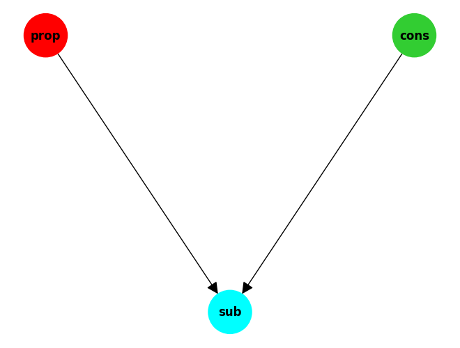

#show_doc(BaseFunction.summary)Functions
Functions that form the elements of a perceptual control node (system).
Overview
Each function outputs the result of applying the function logic and may be a scalar or array, depending on the input. The inputs are supplied as links to another function, from where the values are read. Unless the function is a simple case, such as a ‘Constant’.
Parameters are supplied as arguments to the constructor of the class.
All functions include the methods defined by the BaseFunction class.
HPCTFUNCTION
def HPCTFUNCTION(
args:VAR_POSITIONAL, kwds:VAR_KEYWORD
):
Types of control functions in a node.
Functions
BaseFunction
BaseFunction
def BaseFunction(
name:NoneType=None, value:NoneType=None, links:NoneType=None, new_name:bool=True, namespace:NoneType=None
):
Base class of a PCT function. This class is not used directly by developers, but defines the functionality common to all.
FunctionFactory
def FunctionFactory(
args:VAR_POSITIONAL, kwargs:VAR_KEYWORD
):
Initialize self. See help(type(self)) for accurate signature.
#show_doc(BaseFunction.get_config)Subtract
Subtract
def Subtract(
value:int=0, name:str='subtract', links:NoneType=None, new_name:bool=True, namespace:NoneType=None,
cargs:VAR_KEYWORD
):
A function that subtracts one value from another. Parameter: None. Links: Two links required to each the values to be subtracted.
Proportional
def Proportional(
gain:int=1, value:int=0, name:str='proportional', links:NoneType=None, new_name:bool=True,
namespace:NoneType=None, cargs:VAR_KEYWORD
):
A proportion of the input value as defined by the gain parameter. Parameters: The gain value. Links: One.
Variable
def Variable(
value:int=0, name:str='variable', links:NoneType=None, new_name:bool=True, namespace:NoneType=None,
cargs:VAR_KEYWORD
):
A function that returns a variable value. Parameter: The variable value. Links: None
PassOn
def PassOn(
value:int=0, name:str='variable', links:NoneType=None, new_name:bool=True, namespace:NoneType=None,
cargs:VAR_KEYWORD
):
A function that passes on a variable value from a linked function. Parameter: None. Links: One
GreaterThan
def GreaterThan(
threshold:int=0, upper:int=1, lower:int=0, value:int=0, name:str='greaterthan', links:NoneType=None,
new_name:bool=True, namespace:NoneType=None, cargs:VAR_KEYWORD
):
One of two supplied values is returned if the input is greater than supplied threshold.
Parameters: The threshold and upper and lower value. Links: One
Constant
def Constant(
value:int=0, name:str='constant', new_name:bool=True, namespace:NoneType=None, cargs:VAR_KEYWORD
):
A function that returns a constant value. Parameter: The constant value. Links: None
Step
def Step(
upper:NoneType=None, lower:NoneType=None, delay:NoneType=None, period:NoneType=None, value:int=0,
name:str='step', new_name:bool=True, namespace:NoneType=None, cargs:VAR_KEYWORD
):
A function that returns an alternating signal. Parameter: The upper and lower values, and a delay value. Links: None
Integration
def Integration(
gain:int=1, slow:int=2, value:int=0, name:str='integration', links:NoneType=None, new_name:bool=True,
namespace:NoneType=None, cargs:VAR_KEYWORD
):
A leaky integrating function. Equivalent of a exponential smoothing function, of the amplified input. Parameters: The gain and slow values. Links: One.
IntegrationDual
def IntegrationDual(
gain:int=1, slow:int=2, value:int=0, name:str='integration', links:NoneType=None, new_name:bool=True,
namespace:NoneType=None, cargs:VAR_KEYWORD
):
A leaky integrating function, applying one signal to another. Equivalent of a exponential smoothing function, of the amplified input. Parameters: The gain and slow values. Links: Two.
Sigmoid
def Sigmoid(
range:int=2, slope:int=10, value:int=0, name:str='sigmoid', links:NoneType=None, new_name:bool=True,
namespace:NoneType=None, cargs:VAR_KEYWORD
):
A sigmoid function. Similar to a proportional function, but kept within a limit (+/- half the range). Parameters: The range and slope values. Links: One.
WeightedSum
def WeightedSum(
weights:list=[0], value:int=0, name:str='weighted_sum', links:NoneType=None, new_name:bool=True,
usenumpy:bool=False, namespace:NoneType=None, cargs:VAR_KEYWORD
):
A function that combines a set of inputs by multiplying each by a weight and then adding them up. Parameter: The weights array. Links: Links to all the input functions.
SmoothWeightedSum
def SmoothWeightedSum(
weights:list=[0], smooth_factor:float=0.0, value:int=0, name:str='smooth_weighted_sum', links:NoneType=None,
new_name:bool=True, usenumpy:bool=False, namespace:NoneType=None, cargs:VAR_KEYWORD
):
A function that combines a set of inputs by multiplying each by a weight and then adding them up. And then smooths the result. Parameter: The weights array. Links: Links to all the input functions.
IndexedParameter
def IndexedParameter(
index:NoneType=None, value:int=0, name:str='indexed_parameter', links:NoneType=None, new_name:bool=True,
namespace:NoneType=None, cargs:VAR_KEYWORD
):
A function that returns a parameter from a linked function, indexed by number. Parameter: The index. Links: One.
SigmoidWeightedSum
SigmoidWeightedSum
def SigmoidWeightedSum(
weights:list=[0], range:float=2.0, slope:float=10.0, value:int=0, name:str='sigmoid_weighted_sum',
links:NoneType=None, new_name:bool=True, usenumpy:bool=False, namespace:NoneType=None, cargs:VAR_KEYWORD
):
A function that combines a set of inputs by multiplying each by a weight and then adding them up. And then limits the output by squashing with a sigmoid function. Parameter: The weights array. Links: Links to all the input functions.
SigmoidSmoothWeightedSum
SigmoidSmoothWeightedSum
def SigmoidSmoothWeightedSum(
weights:list=[0], smooth_factor:float=0.0, range:float=2.0, slope:float=10.0, value:int=0,
name:str='sigmoid_smooth_weighted_sum', links:NoneType=None, new_name:bool=True, usenumpy:bool=False,
namespace:NoneType=None, cargs:VAR_KEYWORD
):
A function that combines a set of inputs by multiplying each by a weight and then adding them up. It then smooths the result and then limits the output by squashing with a sigmoid function. Parameter: The weights array. Links: Links to all the input functions.
Derivative
def Derivative(
history_length:int=1, value:int=0, name:str='derivative', links:NoneType=None, new_name:bool=True,
usenumpy:bool=False, namespace:NoneType=None, cargs:VAR_KEYWORD
):
A function that provides the difference to previous values of the input signal. Parameter: The weights array. Links: Links to all the input functions.
DerivativeWeightedSum
def DerivativeWeightedSum(
weights:list=[0], history_length:int=1, value:int=0, name:str='derivative_weighted_sum', links:NoneType=None,
new_name:bool=True, usenumpy:bool=False, namespace:NoneType=None, cargs:VAR_KEYWORD
):
A function that combines a set of inputs by multiplying each by a weight and then adding them up. And then takes the difference of with a past value. Parameter: The weights array. Links: Links to all the input functions.
Usage
Creating Functions
Standard class constructor. Different ways to create a function with the standard constructor.
prop = Proportional()
print(prop.get_config())
prop = Proportional("myprop", 10)
print(prop.get_config())
prop = Proportional(gain=10)
print(prop.get_config()){'type': 'Proportional', 'name': 'proportional', 'value': 0, 'links': {}, 'gain': 1}
{'type': 'Proportional', 'name': 'proportional', 'value': 10, 'links': {}, 'gain': 'myprop'}
{'type': 'Proportional', 'name': 'proportional', 'value': 0, 'links': {}, 'gain': 10}Configuration class constructor. Create the function by passing a configuration structure to the constructor.
prop = Proportional(**{'name': 'myprop', 'value': 5, 'gain': 20})
print(prop.get_config()){'type': 'Proportional', 'name': 'myprop', 'value': 5, 'links': {}, 'gain': 20}Configuration class method. Create the function by passing a configuration structure to a class method.
config = {'name': 'myprop', 'value': -0.5, 'gain': 21}
prop = Proportional.from_config(config)
print(prop.get_config()){'type': 'Proportional', 'name': 'myprop', 'value': -0.5, 'links': {}, 'gain': 21}prop = Proportional()
print(prop.get_config())
prop1 = Proportional.from_config(prop.get_config())
print(prop1.get_config())
assert prop.get_config() == prop1.get_config(){'type': 'Proportional', 'name': 'proportional', 'value': 0, 'links': {}, 'gain': 1}
{'type': 'Proportional', 'name': 'proportional', 'value': 0, 'links': {}, 'gain': 1}An example showing creating a WeightedSum function.
wts=[1,1,1]
ws = WeightedSum(weights=wts)
ns = ws.namespace
ws.add_link(Constant(10, namespace=ns))
ws.add_link(Constant(5, namespace=ns))
ws.add_link(Constant(20, namespace=ns))
assert ws() == 35
config = ws.get_config()#ws1 = WeightedSum.from_config(config, namespace=ns)
ws1 = WeightedSum.from_config(config, new_name= 'weighted_sum1', namespace=ns)
ws1.get_config(){'type': 'WeightedSum',
'name': 'weighted_sum1',
'value': 35,
'links': {0: 'constant', 1: 'constant1', 2: 'constant2'},
'weights': [1, 1, 1]}scons = Constant(2, name='scons')
sig = Sigmoid()
sig.add_link(scons)
sig()0.9999092042625952cons = Constant([2,2], name='cons')
print(cons.output_string()+ "")[2, 2]Viewing Functions
View the details of the function with the “summary”, which prints the name, type, parameters, value and links (if any).
prop.summary()proportional Proportional | gain 1 | 0 As already seen the function details can be seen by retrieving the configuration.
print(prop.get_config()){'type': 'Proportional', 'name': 'proportional', 'value': 0, 'links': {}, 'gain': 1}Or you can print the function.
print(prop){'namespace': UUID('6d28b227-62e7-11ef-87fe-5c879c15de65'), 'value': 0, 'links': [], 'checklinks': True, 'name': 'proportional', 'decimal_places': 3, 'gain': 1}Set the decimal places for output display.
print(prop.output_string())
prop.set_decimal_places(2)
print(prop.output_string())0.000
0.00You can also view a function graphically as a network of connected nodes.
sub = Subtract(links=[Constant(1, name='cons'), Proportional(10, name='prop')], name='sub')
print(sub.value)
g = sub.graph()
print(g)
sub.draw(node_size=2000)0
DiGraph with 3 nodes and 2 edges
Save and Load
Save a function to file.
import jsonprint(ws.get_config())
ws.save("ws.json"){'type': 'WeightedSum', 'name': 'weighted_sum', 'value': 35, 'links': {0: 'constant', 1: 'constant1', 2: 'constant2'}, 'weights': [1, 1, 1]}Create a function from file.
wss = WeightedSum.load("ws.json", new_name='weighted_sum1', namespace=ns)
print(ws.get_config())
print(wss.get_config())
assert wss.get_config() == {'type': 'WeightedSum', 'name': 'weighted_sum2', 'value': 35, 'links': {0: 'constant', 1: 'constant1', 2: 'constant2'}, 'weights': [1, 1, 1]}{'type': 'WeightedSum', 'name': 'weighted_sum', 'value': 35, 'links': {0: 'constant', 1: 'constant1', 2: 'constant2'}, 'weights': [1, 1, 1]}
{'type': 'WeightedSum', 'name': 'weighted_sum2', 'value': 35, 'links': {0: 'constant', 1: 'constant1', 2: 'constant2'}, 'weights': [1, 1, 1]}Setting Links
The next cell shows how a link is added to one function from another. In this case from an Integration function to a Constant function. So, whenever “integrator” runs it will get its input from “cons”.
integrator = Integration(3, 10)
cons = Constant(5)
integrator.add_link(cons)
integrator.summary()
output = integrator()
print(output)
assert output == 1.5integration Integration | gain 3 slow 10 | 0 | links constant
1.5UniqueNamer.getInstance().clear() # initialises the list of function names
integ = Integration(**{'name': 'myinteg', 'value': 1, 'gain': 20, 'slow': 100})
prop = Proportional(5, name="myprop")
integ.add_link(prop)
print(integ.get_config())
assert integ.get_config() == {'type': 'Integration', 'name': 'myinteg', 'value': 1, 'links': {0: 'myprop'}, 'gain': 20, 'slow': 100}{'type': 'Integration', 'name': 'myinteg', 'value': 1, 'links': {0: 'myprop'}, 'gain': 20, 'slow': 100}You can also define the link when you create the function, as in this example with “Proportional”.
const = Constant(1, name='const')
ns = const.namespace
print(const())
pr1 = Proportional(name='pr1', links=const, namespace=ns)
pr1.summary()
assert pr1() == 11
pr1 Proportional | gain 1 | 0 | links const It can be the name of the linked function.
pr = Proportional(gain=10, name='pr', links='const', namespace=ns)
pr.summary()
assert pr() == 10
print(pr())pr Proportional | gain 10 | 0 | links const
10Or it can be a list of names.
sub = Subtract(links=[ 'pr', 'const'], namespace=ns)
print(sub.get_config())
print(const())
print(pr())
print(pr())
sub.summary()
print(sub())
assert sub()==9{'type': 'Subtract', 'name': 'subtract', 'value': 0, 'links': {0: 'pr', 1: 'const'}}
1
10
10
subtract Subtract | 0 | links pr const
9Running a Fucntion
A function can simply be run by calling it, without any parameters. It will use whatever input was set by the links. It returns the result of the function. In this example it will be 5 * 3 / 10, that is, input * gain / slow.
out = sub()
print(out)9A function can be also run in a loop with the run() method and provided the loop count.
integrator = Integration(gain=3, slow=10)
integrator.add_link(sub)
o = integrator.run(steps=10, verbose=True)2.700 5.130 7.317 9.285 11.057 12.651 14.086 15.377 16.540 17.586 integrator(verbose=True)18.527 18.527113905569998output = integrator()
print(output)
#assert output == 1.5
npt.assert_almost_equal(output, 19.374402515013)19.374402515013print(integrator.get_config()){'type': 'Integration', 'name': 'integration', 'value': 19.374402515013, 'links': {0: 'subtract'}, 'gain': 3, 'slow': 10}An example showing creating and running a sigmoid WeightedSum function.
wts=[0.01,0.01,0.01]
sgws = SigmoidWeightedSum(weights=wts, range=1.0, slope=5.0)
ns = sgws.namespace
sgws.add_link(Constant(10, namespace=ns))
sgws.add_link(Constant(5, namespace=ns))
sgws.add_link(Constant(20, namespace=ns))
sgws.summary()
print(sgws.get_parameters_list())
out = sgws()
print(out)
assert out == 0.3519528019683106sigmoid_weighted_sum SigmoidWeightedSum | weights [0.01, 0.01, 0.01] range 1.00 slope 5.00 | 0 | links constant constant1 constant2
[[0.01, 0.01, 0.01], 1.0, 5.0]
0.3519528019683106An example showing creating and running a sigmoid smooth WeightedSum function.
wts=[0.01,0.01,0.01]
sgsmws = SigmoidSmoothWeightedSum(weights=wts, smooth_factor=0.9)
ns = sgsmws.namespace
sgsmws.add_link(Constant(10, namespace=ns))
sgsmws.add_link(Constant(5, namespace=ns))
sgsmws.add_link(Constant(20, namespace=ns))
sgsmws.summary()
print(sgsmws.get_parameters_list())
print(sgsmws.get_graph_name())
labels = {}
sgsmws.get_weights_labels_funcdata(labels)
print('wts labels',labels)
for _ in range(5):
# print(sgsmsm())
out = sgsmws()
print(out)
npt.assert_almost_equal(out, 0.34373448930708195)sigmoid_smooth_weighted_sum SigmoidSmoothWeightedSum | weights [0.01, 0.01, 0.01] smooth 0.90 range 2.00 slope 10.00 | 0 | links constant constant1 constant2
[[0.01, 0.01, 0.01], 0.9, 2.0, 10.0]
sigmoid_smooth_weighted_sum
0.90:2.00|10.00
wts labels {('sigmoid_smooth_weighted_sum\n0.90:2.00|10.00', 'constant\n10.00'): '0.01', ('sigmoid_smooth_weighted_sum\n0.90:2.00|10.00', 'constant1\n5.00'): '0.01', ('sigmoid_smooth_weighted_sum\n0.90:2.00|10.00', 'constant2\n20.00'): '0.01'}
0.08727737447415773
0.16473508145615878
0.23277835967904958
0.2921474527779875
0.34373448930708195An example showing creating and running a smoothed WeightedSum function.
wts=[1.0,1.0,1.0]
wts=[0.01,0.01,0.01]
smws = SmoothWeightedSum(weights=wts, smooth_factor=0.9)
ns = smws.namespace
smws.add_link(Constant(10, namespace=ns))
smws.add_link(Constant(5, namespace=ns))
smws.add_link(Constant(20, namespace=ns))
smws.summary()
print(smws.get_parameters_list())
print(smws.get_graph_name())
for _ in range(5):
out = smws()
print(out)
npt.assert_almost_equal(out, 0.1433285)smooth_weighted_sum SmoothWeightedSum | weights [0.01, 0.01, 0.01] smooth 0.90 | 0 | links constant constant1 constant2
[[0.01, 0.01, 0.01], 0.9]
smooth_weighted_sum
0.90
0.034999999999999996
0.0665
0.09485
0.120365
0.1433285An example showing creating and running a derivative function.
dv = Derivative(history_length=5)
ns = dv.namespace
cons = Constant(10, namespace=ns)
dv.add_link(cons)
dv.summary()
print(dv.get_config())
print(dv.get_parameters_list())
print(dv.get_graph_name())
labels = {}
dv.get_weights_labels(labels)
print(labels)
for i in range(20):
cons.set_value(i*i)
out = dv()
print(out, end=" ")
print()
assert out == -136
print(dv.history)
assert dv.history == [225, 256, 289, 324, 361]derivative Derivative | history_length 5 | 0 | links constant
{'type': 'Derivative', 'name': 'derivative', 'value': 0, 'links': {0: 'constant'}, 'history_length': 5}
[5]
derivative
5.00
{}
0 -1 -4 -9 -16 -24 -32 -40 -48 -56 -64 -72 -80 -88 -96 -104 -112 -120 -128 -136
[225, 256, 289, 324, 361]An example showing creating a derivative WeightedSum function.
wts=[0.01,0.01,0.01]
dvws = DerivativeWeightedSum(weights=wts, history_length=5)
ns = dvws.namespace
cons = Constant(10, namespace=ns)
dvws.add_link(cons)
#dvws.add_link(Constant(10, namespace=ns))
dvws.add_link(Constant(5, namespace=ns))
dvws.add_link(Constant(20, namespace=ns))
dvws.summary()
print(dvws.get_config())
print(dvws.get_parameters_list())
print(dvws.get_graph_name())
labels = {}
dvws.get_weights_labels(labels)
print(labels)
for i in range(20):
cons.set_value(i*i)
out = dvws()
print(out, end=" ")
print()
npt.assert_almost_equal(out, -1.3599999999999999)
print(dvws.history)
assert dvws.history == [2.5, 2.81, 3.14, 3.49, 3.86]derivative_weighted_sum DerivativeWeightedSum | weights [0.01, 0.01, 0.01] history_length 5 | 0 | links constant constant1 constant2
{'type': 'DerivativeWeightedSum', 'name': 'derivative_weighted_sum', 'value': 0, 'links': {0: 'constant', 1: 'constant1', 2: 'constant2'}, 'weights': [0.01, 0.01, 0.01], 'history_length': 5}
[[0.01, 0.01, 0.01], 5]
derivative_weighted_sum
5
{('derivative_weighted_sum', 'constant'): '0.01', ('derivative_weighted_sum', 'constant1'): '0.01', ('derivative_weighted_sum', 'constant2'): '0.01'}
0.0 -0.010000000000000009 -0.040000000000000036 -0.09000000000000002 -0.16000000000000003 -0.24 -0.31999999999999995 -0.39999999999999997 -0.4800000000000001 -0.56 -0.64 -0.72 -0.7999999999999998 -0.8799999999999999 -0.96 -1.04 -1.12 -1.2000000000000002 -1.2800000000000002 -1.3599999999999999
[2.5, 2.81, 3.14, 3.49, 3.86]wts=[0.01,0.01,0.01]
dvws = DerivativeWeightedSum(weights=wts, history_length=0)
ns = dvws.namespace
cons = Constant(10, namespace=ns)
dvws.add_link(cons)
dvws.add_link(Constant(5, namespace=ns))
dvws.add_link(Constant(20, namespace=ns))
dvws.summary()
print(dvws.get_config())
print(dvws.get_parameters_list())
print(dvws.get_graph_name())
labels = {}
dvws.get_weights_labels(labels)
print(labels)
for i in range(20):
cons.set_value(i*i)
out = dvws()
print(out, end=" ")
print()
npt.assert_almost_equal(out, 3.86)derivative_weighted_sum DerivativeWeightedSum | weights [0.01, 0.01, 0.01] history_length 0 | 0 | links constant constant1 constant2
{'type': 'DerivativeWeightedSum', 'name': 'derivative_weighted_sum', 'value': 0, 'links': {0: 'constant', 1: 'constant1', 2: 'constant2'}, 'weights': [0.01, 0.01, 0.01], 'history_length': 0}
[[0.01, 0.01, 0.01], 0]
derivative_weighted_sum
0
{('derivative_weighted_sum', 'constant'): '0.01', ('derivative_weighted_sum', 'constant1'): '0.01', ('derivative_weighted_sum', 'constant2'): '0.01'}
0.25 0.26 0.29000000000000004 0.34 0.41000000000000003 0.5 0.61 0.74 0.8900000000000001 1.06 1.25 1.46 1.69 1.94 2.21 2.5 2.81 3.14 3.49 3.86 Examples
Configuration
Create a function from the configuration of another.
integrator = Integration(3, 10)
ns=integrator.namespace
cons = Constant(5, namespace=ns)
integrator.add_link(cons)
config = integrator.get_config()
inte = Integration.from_config(config, new_name='integration1', namespace=ns)
print(inte())
target = {'type': 'Integration', 'name': 'integration1', 'value': 1.5, 'links': {0: 'constant'}, 'gain': 3, 'slow': 10}
print(target)
assert inte.get_config() == target1.5
{'type': 'Integration', 'name': 'integration1', 'value': 1.5, 'links': {0: 'constant'}, 'gain': 3, 'slow': 10}